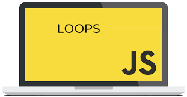
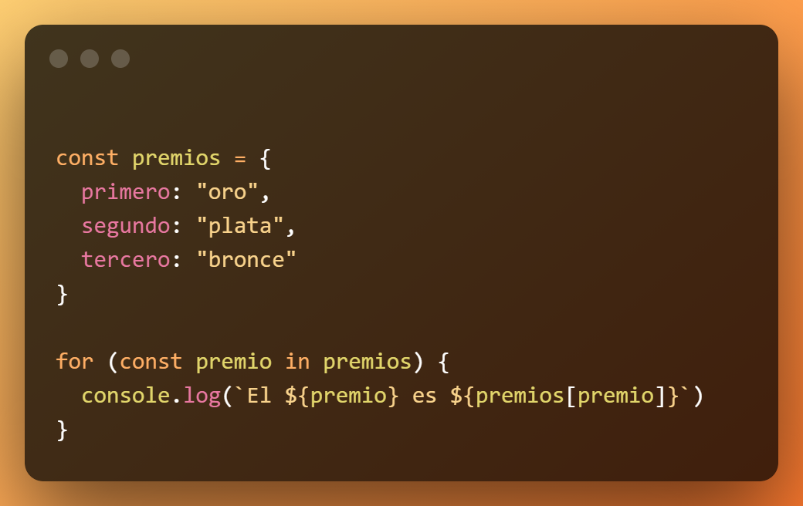
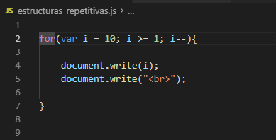

📚 ¿Qué es un bucle?
Un bucle (o loop) en JavaScript es una estructura de control que permite repetir un bloque de código varias veces hasta que se cumpla una condición específica.
Los bucles son muy útiles cuando necesitamos realizar operaciones repetitivas como recorrer arrays, sumar valores o esperar a que una condición cambie.
📌 Tipos de bucles en JavaScript
En JavaScript existen varios tipos de bucles, cada uno con diferentes usos:
| Tipo de Bucle | Característica Principal | Uso Común |
|---|---|---|
| for | Repite un bloque de código un número determinado de veces | Recorrer arrays o ejecutar acciones un número de veces |
| while | Repite mientras una condición sea verdadera | Cuando no sabemos cuántas veces se repetirá |
| do...while | Igual que el while, pero ejecuta el bloque al menos una vez | Cuando queremos que el código se ejecute al menos una vez |
| for...of | Recorre los valores de un objeto iterable como arrays | Recorrer arrays o strings |
| for...in | Recorre las propiedades enumerables de un objeto | Recorrer las claves (propiedades) de objetos |
📌 Detalle de cada bucle
1. Bucle for
- ✅ Ejecuta el bloque un número exacto de veces.
- ✅ Tiene tres partes: inicialización, condición y actualización.
for (let i = 0; i < 5; i++) {
console.log("Número: " + i);
}2. Bucle while
- ✅ Ejecuta el bloque mientras la condición sea verdadera.
- ✅ La condición se evalúa antes de cada iteración.
let i = 0;
while (i < 5) {
console.log("Número: " + i);
i++;
}3. Bucle do...while
- ✅ Igual que el while, pero la condición se evalúa después.
- ✅ El bloque se ejecuta al menos una vez, incluso si la condición es falsa desde el principio.
let i = 0;
do {
console.log("Número: " + i);
i++;
} while (i < 5);4. Bucle for...of
- ✅ Sirve para recorrer arrays, strings u objetos iterables.
- ✅ En cada iteración devuelve el valor del elemento.
let frutas = ["Manzana", "Banana", "Pera"];
for (let fruta of frutas) {
console.log(fruta);
}5. Bucle for...in
- ✅ Recorre las propiedades (claves) de un objeto.
- ✅ Devuelve el nombre de cada propiedad.
let persona = { nombre: "Ana", edad: 30, ciudad: "Madrid" };
for (let clave in persona) {
console.log(clave + ": " + persona[clave]);
}📌 Control de bucles: Sentencias break y continue
break 👉 Sale completamente del bucle.
for (let i = 0; i < 10; i++) {
if (i === 5) break;
console.log(i);
}continue 👉 Salta la iteración actual y pasa a la siguiente.
for (let i = 0; i < 5; i++) {
if (i === 2) continue;
console.log(i);
}📌 Buenas prácticas al usar bucles
- ✅ Evitar bucles infinitos (asegurarse que la condición termine en algún momento).
- ✅ No modificar innecesariamente la variable de control dentro del bucle.
- ✅ Usar
for...ofo métodos como.forEach()cuando sea posible para arrays. - ✅ Si recorres objetos, usar
for...ino métodos comoObject.keys().
📌 Ejemplo práctico: Sumar los números del 1 al 5
let suma = 0;
for (let i = 1; i <= 5; i++) {
suma += i;
}
console.log("La suma es: " + suma);
📌 Resumen Final
- ✅ Los bucles son esenciales para realizar tareas repetitivas.
- ✅ JavaScript ofrece distintas estructuras para distintas necesidades: for, while, do...while, for...of, for...in.
- ✅ Saber elegir el bucle correcto mejora la legibilidad y eficiencia del código.